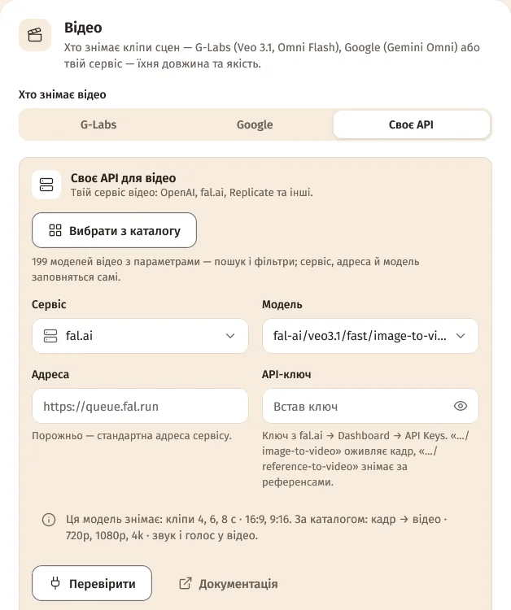
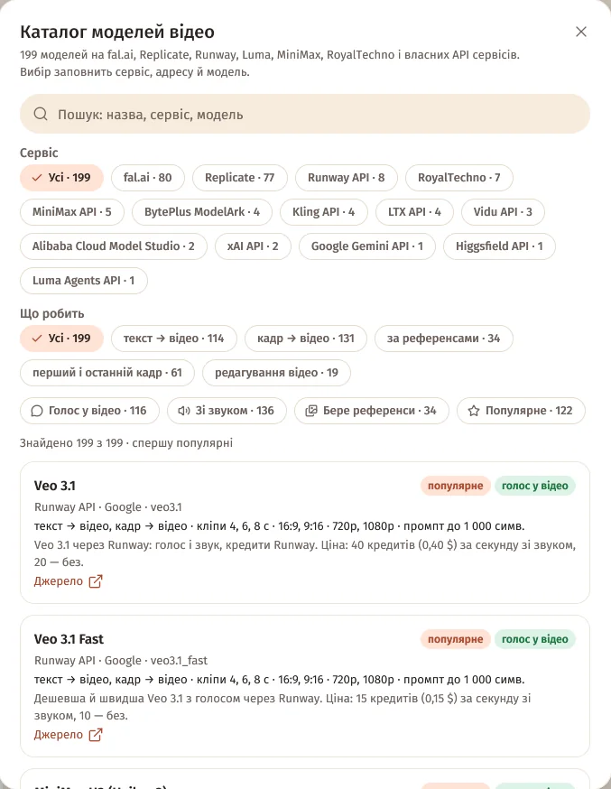
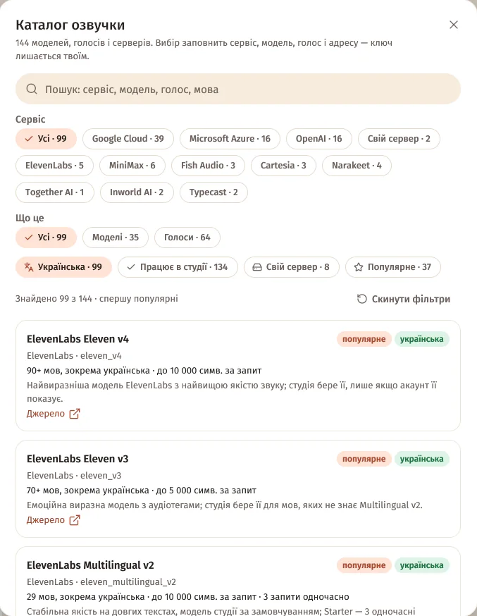
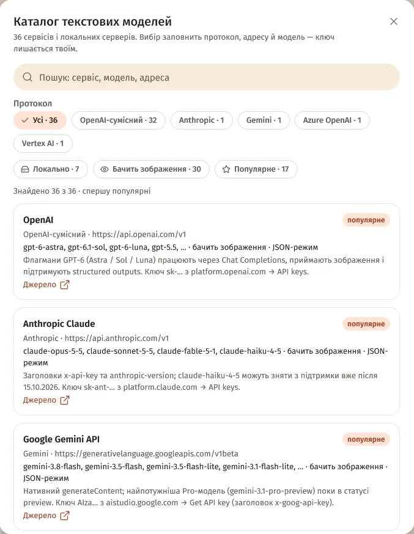

Де каталоги
Кнопка «Вибрати з каталогу» — у налаштуваннях підключень:
| Каталог | Де кнопка |
|---|---|
| Моделі відео — 199 | «Відео» → «Своє API» → блок «Своє API для відео» |
| Моделі кадрів — 188 | «Кадри» → «Своє API» → блок «Своє API для кадрів» |
| Озвучка — 144 моделі, голоси й сервери | Картка «Озвучка» |
| Текстові моделі — 36 сервісів і локальних серверів | «Текст і сценарій», під «Хто пише текст» |
Для розпізнавання мови каталогу немає.

Що в каталогах
- Відео — 199 моделей: fal.ai (80), Replicate (77), RoyalTechno (7) і прямі API сервісів (35) — Runway, MiniMax, BytePlus ModelArk, Kling, LTX, Vidu, Alibaba Cloud Model Studio, xAI, Google Gemini, Higgsfield, Luma. 116 з них знімають голос у відео.
- Кадри — 188 моделей: Replicate (80), fal.ai (73), RoyalTechno (4) і прямі API (31).
- Озвучка — 144 записи: 70 моделей, 70 голосів і 4 сервери для свого комп'ютера; 134 працюють у студії, решта — довідка про сервіси, через які студія ще не озвучує напряму.
- Текст — 36 сервісів: 32 OpenAI-сумісні, Anthropic, Google Gemini, Azure OpenAI і Vertex AI; 7 працюють локально, 30 бачать зображення.
У кожного запису — посилання «Джерело». Каталоги звірено з документацією сервісів 5 жовтня 2026.
Пошук і фільтри
Угорі — пошук, нижче — фільтри з лічильниками: «Сервіс», «Що робить» (текст → відео, кадр → відео, за референсами…), «Що це», «Протокол». І перемикачі:
| Каталог | Перемикачі |
|---|---|
| Відео | «Голос у відео», «Зі звуком», «Бере референси», «Популярне» |
| Кадри | «Бере референси», «Добре пише текст», «Популярне» |
| Озвучка | «Українська», «Працює в студії», «Свій сервер», «Популярне» |
| Текст | «Локально», «Бачить зображення», «Популярне» |
Під фільтрами — «Знайдено N з M · спершу популярні» і «Скинути фільтри». Записи йдуть по 60, далі — «Показати ще». У вузькому вікні фільтри сховані за кнопкою «Фільтри».


Що станеться після вибору
- Відео й кадри: студія ставить сервіс, адресу (лишає порожньою, якщо це стандартна адреса сервісу) і модель, а довжину кліпів підганяє під нову модель. Якщо в тебе був свій опис API, спершу спитає «Замінить опис API?».
- Озвучка: перемикає на цей сервіс (його збережені ключі повернуться) і ставить модель, голос і адресу. Сервіси, описані через API, стають «Власним сервером».
- Текст: протокол, адресу й модель за замовчуванням. Якщо в адресі є
{…}, студія підкаже замінити це на своє.
Ключ каталог не чіпає: встав ключ цього сервісу й натисни «Перевірити».

Питання
Чому деякі записи озвучки неактивні?
Через ці сервіси студія ще не озвучує напряму — у каталозі вони як довідка: можливості й документація.
Чому неактивний Vertex AI?
Vertex AI приймає лише тимчасовий OAuth-токен, а не постійний ключ.
Ціни в каталозі точні?
Це довідка з документації сервісу на дату перевірки. Актуальні ціни — за посиланням «Джерело» в записі.